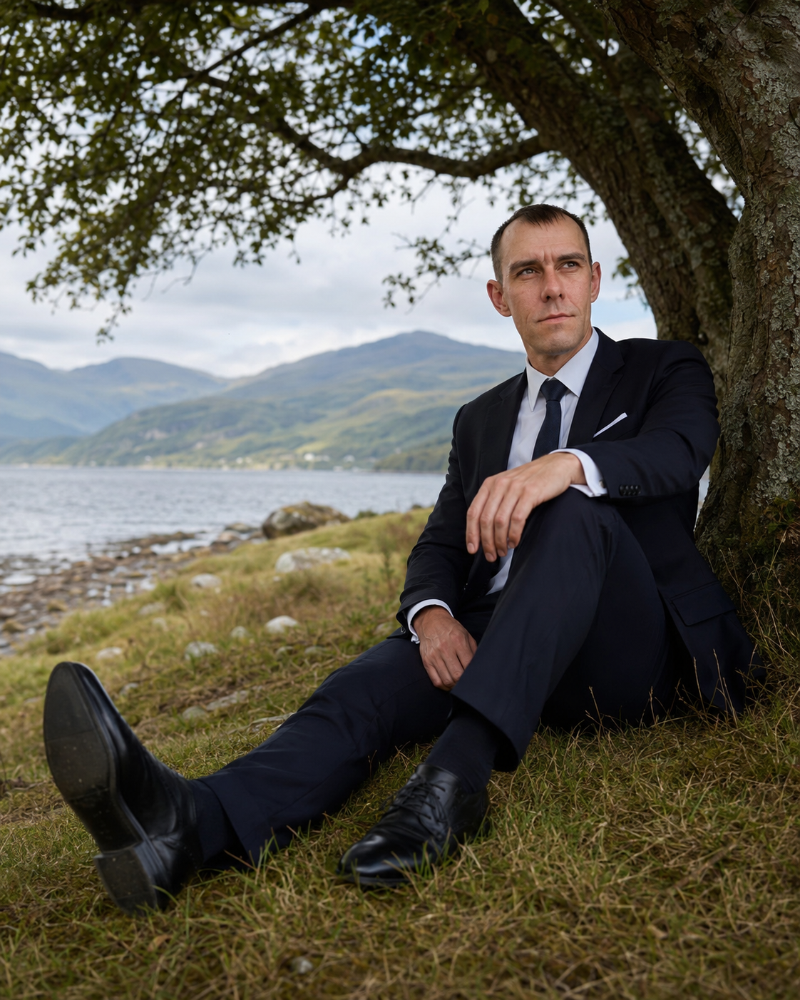

Lord Alexander Romanets
На основании официального регистрационного акта № Q23547 наделен легальным статусом и правом использования титула Лорда Гленко (Lord of Glencoe) в рамках международной хартии сохранения наследия Шотландии. Подлинность статуса и правомерность владения сувенирным участком подтверждены уполномоченным органом Highland Titles.

Основатель независимой технологической компании, специализирующейся на проектировании и комплексной разработке мобильного программного обеспечения. Деятельность сфокусирована на создании закрытых коммерческих систем повышенной отказоустойчивости, а также на проектировании концептуальных интерактивных мобильных платформ.

Обладает глубокой междисциплинарной экспертизой на стыке высоких технологий и тяжелой промышленности. Профессиональный бэкграунд в индустриальном секторе формирует жесткий аналитический подход к управлению сложными техническими процессами и архитектурными решениями.